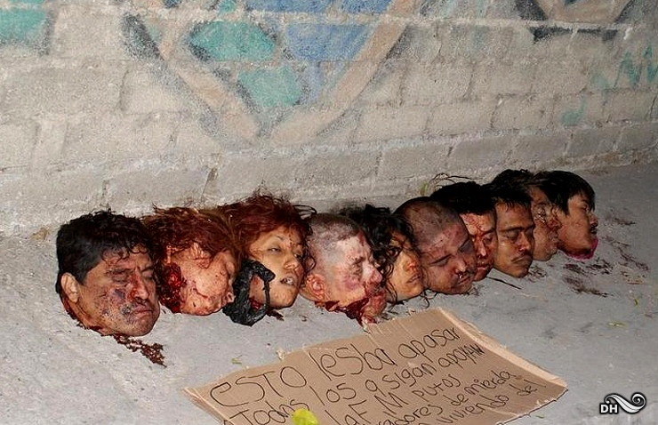
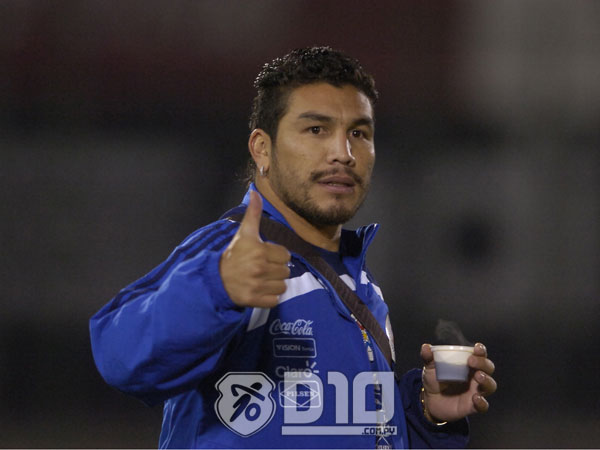

Alleged Crimes and History
- First arrest came at the age of nineteen in Texas. Charged with criminally negligent homicide
for running over a middle school counselor with his truck.
- arrests for drunken driving and public drunkenness.
- Soon after indicted on charges of
distributing marijuana and fled to Mexico to avoid capture in high school.
- Became leader of Los Negros which orchestrated kidnappings and recruited operatives, including corrupt police officers, military personnel and
federal agents
- Supplied tractor trailer trucks full of cocaine from Mexico to the Eastern
United States on behalf of the Sinaloa and Beltran-Leyva cartels.
- Became head of a group of assassins
for the Beltran Leyva gang.
- Established the Arturo Beltran Leyva (ABL) drug trafficking organization. Reresponsible for the procurement
of arms and ammunitions from the United States. Responsible for the trafficking of
illicit drugs, including cocaine, marijuana, heroin, and methamphetamine. Reportedly responsible for kidnapping, torture, murder,
and various other acts of violence against numerous men, women, and children in Mexico.
The organization is connected with the assassinations of numerous Mexican law enforcement officials.
- He also led the Fuerzas Armadas de Arturo, a group of assassins responsible for a majority of the
killings committed by the drug trafficking organization.

Convictions and Indictments
- Indicted in the Northern District of Georgia on June 11,
2010, with conspiring to import and distribute cocaine.
- Indicted for conspiring to launder money by transporting
drug money from the United States into Mexico.
- Indicted in the Eastern District of Louisiana on
narcotics-related charge.
Time served
- Arrested in 2010 in Mexico where he served in federal prison.
- Extradited to Atlanta in 2015 where he currently is serving a life sentence.
Known Victims
-
The morning of January 25, 2010, the football player Salvador Cabañas was
wounded by a gunshot to the head. Through the recording of a CCTV camera José
Jorge Balderas Garza, aka. "JJ", was identified as his attacker.
According to his own statements Valdez-Villarreal himself was the
person who gave "JJ" shelter to protect him from the police, by
placing him in one of his safe houses, this was because of the
friendship they have.
